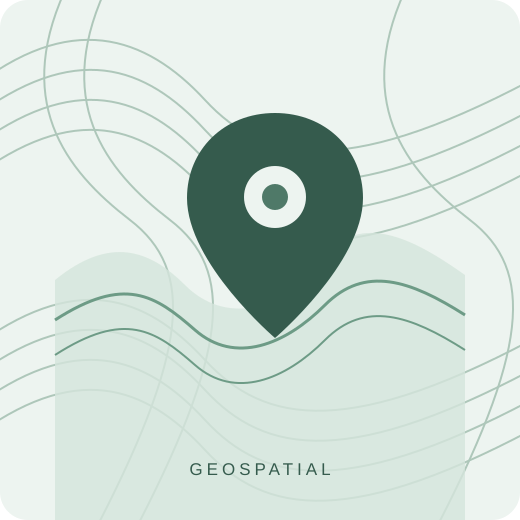

Texas A&M University
In progressMaster of Science in Geoscience — GIS Track
Graduate studies focused on geographic information systems and geospatial analysis.
GIS • GEOSCIENCE • ENVIRONMENTAL PLANNING
Marine science graduate and geoscience graduate student with experience applying geographic information systems to environmental planning, natural resource management, and spatial data visualization.

INTRODUCTION
I have an academic background in marine science and am pursuing graduate studies in geoscience with a focus on geographic information systems. My interests include environmental applications of GIS, cartography, spatial data analysis, and the use of geospatial technology to support land and natural resource management.
In my current role with the Florida Department of Environmental Protection, I contribute to GIS mapping and planning efforts for Florida's state park system. I enjoy combining environmental knowledge with spatial tools to communicate information and support informed planning decisions.
ACADEMIC BACKGROUND
Graduate studies focused on geographic information systems and geospatial analysis.
Graduated Magna Cum Laude • Undergraduate GPA: 3.745
PROFESSIONAL BACKGROUND
TOOLS & CAPABILITIES
ACADEMIC WORK
Used GIS to compare historical salt marsh distributions with modern wetland data. Digitized historical marsh boundaries and analyzed spatial patterns of long-term habitat change, identifying substantial wetland loss across the San Francisco Bay estuary.
LEADERSHIP & INVOLVEMENT
Contributed to team activities while serving as treasurer, supporting financial organization and coordination.
Recognized for completing the requirements of the Eagle Scout rank.
GET IN TOUCH
I welcome opportunities to connect about GIS, geospatial analysis, environmental science, and land management.